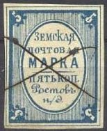
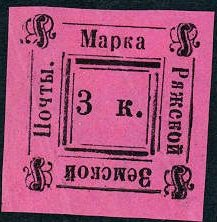
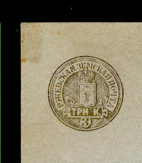
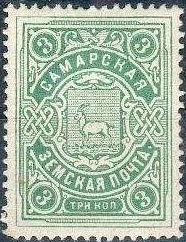

Return To Catalogue - Go to Zemstvos overview - Russia
Note: on my website many of the
pictures can not be seen! They are of course present in the
catalogue;
contact me if you want to purchase it.

5 k blue (3 types, differing in inner lines of oval)


2 k blue 2 k blue (oval more elongated, 1889)


2 k blue 2 k black 2 k gold
Forgery (left) based on an illustration of the Moens catalogue
(right) "Les Timbres-Poste Ruraux de Russie" by Samuel
Koprowski (editor J.B.Moens), 1875. In the word 'RYZANSKO' (upper
left), the letters 'R' and '3' are inverted. Source:
http://ufdc.ufl.edu/UF00020235/00035/23j. It also appears already
in the John Edward Gray 'The Illustrated Catalogue of Postage
Stamps' catalogue of 1870 on page 181 (see image above). Note tht
the bottom and top part are both missing in the above
illustrations.
2 k grey 2 k gold


2 k blue 2 k gold 2 k grey 2 k yellow 2 k red 2 k green 2 k lilac
Forgeries exists and are described on http://ufdc.ufl.edu/UF00020235/00035/24j; genuine stamps always have some holes in the outer framelines (due to the printing setting of the lines). Most likely all forgeries have an extra large star in the lower left inner frame.
1882 Value in square

3 k black on lilac (2 types)
1898 Arms

3 k red, blue and gold
1867 Circle with inscription, '2' at the bottom
(Sorry, no picture available yet)
2 k black (very rare)
1868 Text
(Sorry, no picture available yet)
2 k black (extremely rare)
1869 Arms, imperforated
(Reduced size)

2 k black and red (coloured letters) 2 k black and red (white letters) 2 k black and red (white letters, larger size) 2 k red and blue on blue
1887 Circle with text
Reduced size
2 k black
1887 Arms, perforated

2 k green
1891 Number, perforated or imperforated
2 k grey and red 2 k brown and red (1895)
1896 Arms, new type, perforated or imperforated

2 k blue and red
Envelope:

1908 Arms

3 k green
1870 Arms, imperforated
5 k black
1884 Value in circle, perforated

5 k black and red 5 k black and red (with red angles added) 10 k black and green
1890 Arms, perforated
5 k red 5 k red and green (1891) 5 k red and green (with coloured numbers, 1894) 10 k black on green 10 k green and yellow (1891) 10 k green and yellow (with coloured numbers, 1894)
1897 Arms, new type

5 k red and green 10 k green and yellow
1909 Arms, new type, perforated or imperforated


5 k blue
1909 Switzerland alike stamps

5 k red and green 10 k green and orange
1913 Arms, new type
5 k black and brown


{kind=link}